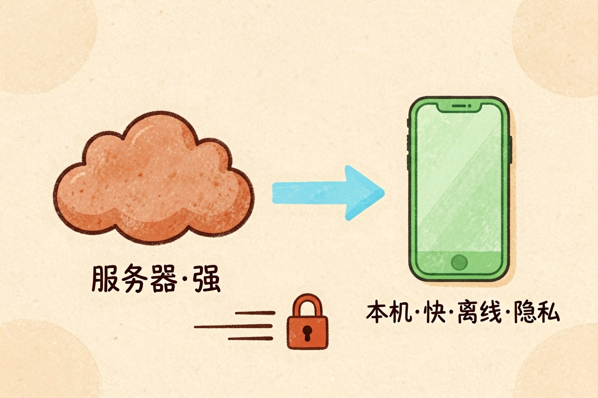
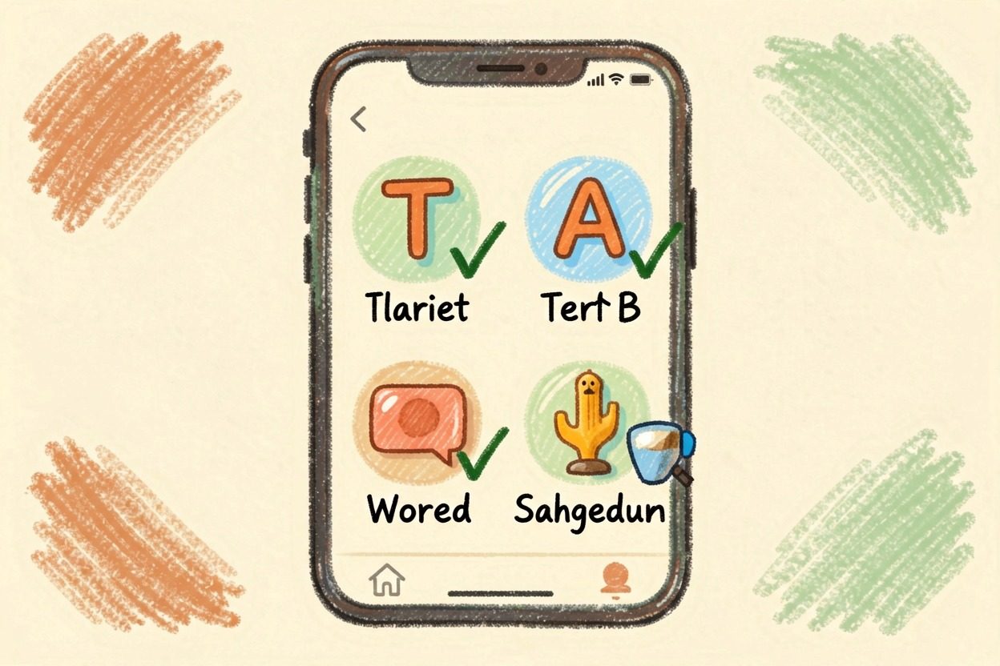

端侧模型是什么：手机本地跑的 AI — Learntide
把模型塞进手机芯片里在本地跑，不联网也能照常用，这正是端侧模型想做的事。
端侧模型是什么：本机芯片直接跑
端侧模型是什么？一句话，它不往远处的服务器发请求，直接在你手上这台设备的芯片里算完。手机、笔记本、耳机、车机，都算端侧。你打完字，本机算一遍，结果当场出来，全程可以不联网。
换句话说，算力从机房挪到了你的口袋里。为了塞得进去，模型体积得压得很小，能力自然也要打折。
它和云端模型差在哪

云端模型跑在机房的大显卡上，参数动辄上千亿，能力强，但每句话都要来回跑一趟网络。信号差就卡，服务器忙就排队，你的内容也确实离开了这台设备。想了解这类大家伙，可以看 大模型是什么。
端侧模型小得多。几亿到几十亿参数是常见档位。它答不了太复杂的题。但有三样东西是云端给不了的：断网能用，响应几乎没有等待，数据不出本机。
成本结构也不同。云端每问一句都在花厂商的钱，端侧花的是你手机的电。所以端侧功能常常直接白送，云端功能更容易设额度。
云端：输入 → 上传 → 机房大卡计算 → 回传 → 输出 （强，依赖网络）
端侧：输入 → 本机芯片计算 → 输出 （快，离线可用）隐私这一条，对不少人是硬需求，具体风险可以看 ai会泄露隐私吗。
为什么这两年才冒出来
三件事凑到了一起。
一是芯片变了。手机处理器里普遍带上了专跑神经网络的单元，算这类任务比通用核心省电得多。
二是模型变小了。量化、蒸馏这些压缩手段成熟起来，同样的效果，体积能压掉一大截。分工式结构也在帮忙，比如 MoE 是什么 那种只激活一部分参数的思路。
三是需求变清楚了。厂商发现，用户天天用的其实就那几件小事，没必要每次都惊动云端。
还有一层原因是合规。数据不出设备，很多审批环节就省了，产品推起来阻力小得多。
它最适合什么场景

轻、快、私密，这三个词基本能概括。
补全一句话，改改措辞，翻译一小段。相册里按内容找照片，录音转文字，通知摘要。这些活端侧做起来又快又稳，还不费流量。
反过来，写长文、做多步推理、查最新资讯、批量处理文档，交给云端更靠谱。现在多数产品是混着来：先在本机试，搞不定再转云端，用户基本感觉不到切换发生过。
选设备时可以留意几件事。内存够不够，芯片有没有专门的算力单元，系统版本支不支持。这三样缺一样，本地功能就跑不起来，或者卡得没法用。
别以为 AI 一定要联网
很多人默认 AI 必须联网才能用，这个印象该更新了。手机上的一部分功能，飞行模式下照样能跑。
想验证也简单。开飞行模式，试试输入法联想、相册搜索、语音转文字，还能用的就是本地在算。
也别走到另一个极端，觉得本地跑就等于绝对安全。应用会不会在后台偷偷上传，还得看它的隐私说明写了什么。判断的关键，仍然是端侧模型是什么、以及你的数据到底有没有真正留在这台设备里。
本文信息核对于 2026-08-08。AI 产品的价格、免费额度与功能变动频繁，实际以各工具官网当前说明为准。